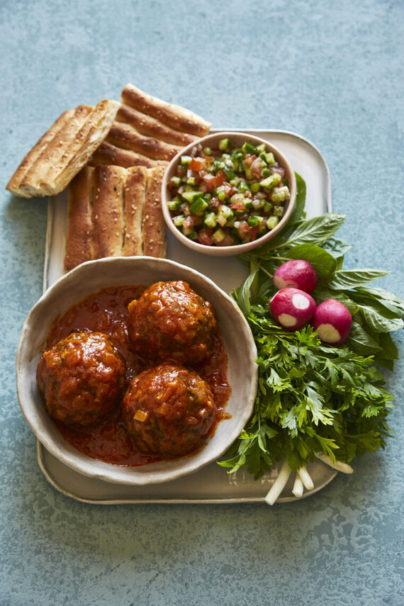

Home
Koofteh Tabrizi

Description
Koofteh Tabrizi is a well-known type of meatball from Tabriz City,
recognized as one of the tastiest Iranian foods. This dish is so beloved that it has been
registered as a national intangible heritage.
Koofteh Tabrizi is made from a mixture of meat, rice,
split peas, and herbs, creating a very nutritious and
delicious meal.
The large, flavorful meatballs are often stuffed with dried fruits and
nuts, adding a delightful surprise with every bite.
Ingredients
Meatbal mixture
- 500 g ground beef
- 1 cup calrose rice washed, soaked, and rinsed
- ½ cup of split peas, parboiled
- 3 medium onion, finely grated excess liquid drained
- ½ cup fresh parsley, finely chopped
- ½ cup fresh coriander, finely chopped
- 1 tbsp fresh thyme, finely chopped
- 1 tbsp dried mint
- 1 tbsp dried tarragon
- 2 tsp turmeric powder
- 1 tbsp salt
- 1 tsp black pepper powder
For Stuffing
- 12 black prunes, pitted
- 1/2 cup walnuts
- 1/2 cup fried onion
Tomato Sauce
- ¼ cup vegetable oil
- 1 large onion, finely chopped
- 1 tsp Turmeric powder
- 2 tsp salt
- ½ tsp black pepper
- ½ cup tomato paste
- 6 cups water
Directions
- In a large bowl, combine minced beef, rice, split peas onions, fresh parsley,
fresh coriander, dried oregano, fresh mint, dried tarragon, turmeric powder, salt and pepper.
Knead ingredients together until well combined.
- Divide the mixture into 60-gram portions, and shape them into small balls. With your thumb,
create a hollow indent in the middle of the ball and fill it with prunes, walnuts and friend onions.
Fold the edges together and roll into a ball until it is firm and the edges are smooth.
- In a medium size pot, on medium-high heat, add onions and vegetable oil.
saute onions until they have a golden brown colour. Add turmeric and black pepper,
stir for ten seconds and then add the tomato paste and saute for one minute.
Add boiling water, salt, and the meatballs. Reduce the heat and allow to simmer on low heat for a least 1 hour,
until the meatballs are cooked through and the sauce as thickened.
- Serve with bread, mixed herbs and Salad Shirazi.